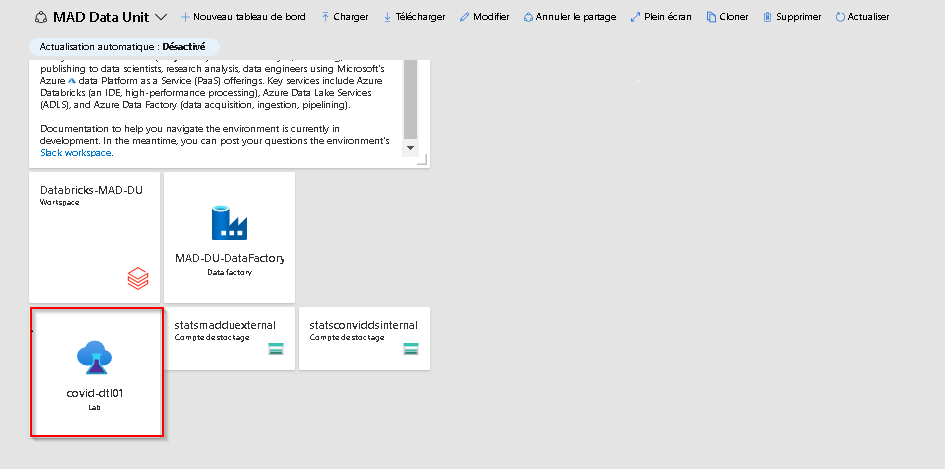
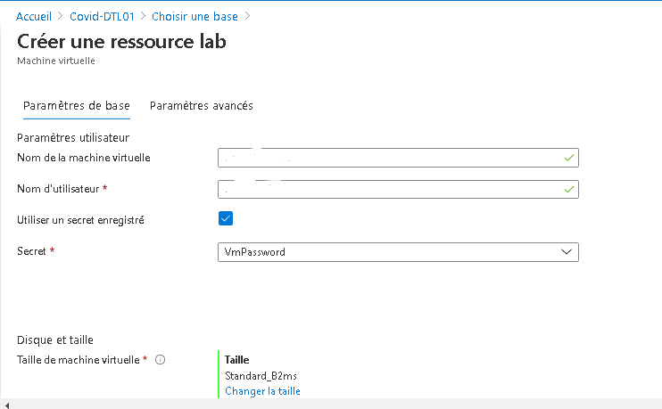
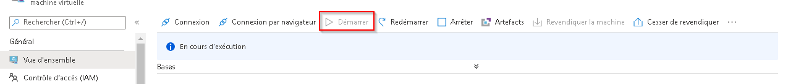
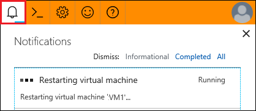
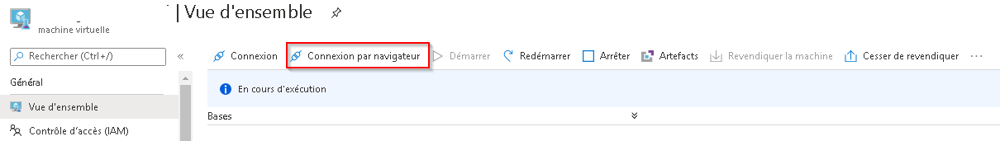
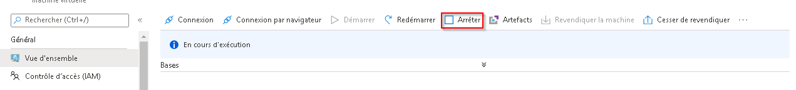

Machines Virtuelle
Machines virtuelles
Trouvez votre laboratoire DevTest
- Dans le portail Azure, cliquez sur le laboratoire DevTest dans le tableau de bord personnalisé de votre projet. 
Créez votre machine virtuelle
Note : Dans certains cas, une machine virtuelle aura été créée au préalable pour vous et vous n'aurez pas l'autorisation d'en créer une. Si vous devez apporter des changements à votre machine virtuelle, consultez la FAQ.
-
À partir de la page Vue d'ensemble du laboratoire DevTest, cliquez sur le bouton + Ajouter.
-
Choisissez une base appropriée pour votre machine virtuelle (p. ex. Data Science Virtual Machine - Windows Server 2019). Pour en savoir plus sur le logiciel inclus dans l'image de machine virtuelle pour la science des données (Data Science Virtual Machine), veuillez cliquer ici.
-
Entrez un nom pour votre machine virtuelle ainsi qu'un nom d'utilisateur et un mot de passe que vous utiliserez pour vous connecter à la machine virtuelle. Décochez les cases Utiliser un secret enregistré et Enregistrer comme mot de passe par défaut. Laissez les autres champs par défaut et cliquez sur le bouton Créer.

Trouvez votre machine virtuelle
- Faites défiler la page Vue d'ensemble du laboratoire DevTest jusqu'à ce que vous voyiez votre machine virtuelle sous Mes machines virtuelles. Cliquez sur votre machine virtuelle pour en afficher la Vue d'ensemble.
Démarrez votre machine virtuelle
- À partir de la page Vue d'ensemble de votre machine virtuelle, cliquez sur le bouton Démarrer.

- Le demarrage de la machine virtuelle prendra quelques minutes. Surveillez l'avancement du démarrage en cliquant sur l'icône Notifications dans le coin supérieur droit de la fenêtre.

Connectez-vous à votre machine virtuelle
- À partir de la page Vue d'ensemble de votre machine virtuelle, cliquez sur Connexion du navigateur (si vous ne voyez pas ce bouton, vous devrez peut-être cliquer sur le bouton Connecter, puis choisir Bastion dans le menu déroulant).

-
Veuillez à cocher la case Ouvrir dans une nouvelle fenêtre, puis entrez le nom d'utilisateur et le mot de passe que vous avez utilisé au moment de créer votre machine virtuelle, et cliquez sur le bouton Connecter. Votre machine virtuelle devrait s'ouvrir dans un nouvel onglet du navigateur.
Note : Par défaut, la machine virtuelle Ubuntu s'ouvre en mode Serveur Terminal. Vous pouvez acceder à l’interface graphique de votre machine Ubuntu à l'aide de l'application X2Go, à partir de votre machine Windows.
Arrêtez votre machine virtuelle
Les machines virtuelles entraînent des coûts uniquement quand elles sont en marche. Pour éviter les dépenses inutiles, vous devez arrêter votre machine virtuelle lorsque vous ne l'utilisez pas. 1. À partir de la page Vue d'ensemble de votre machine virtuelle, cliquez sur le bouton Arrêter.
